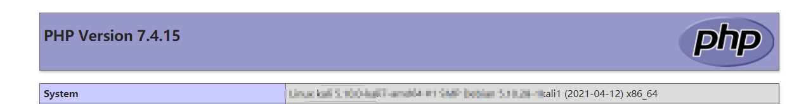
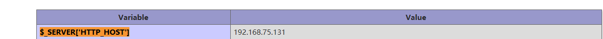
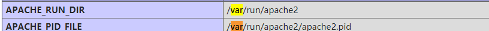
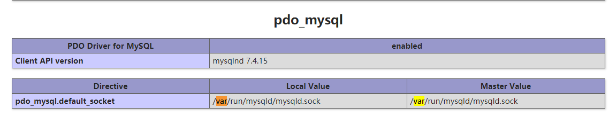
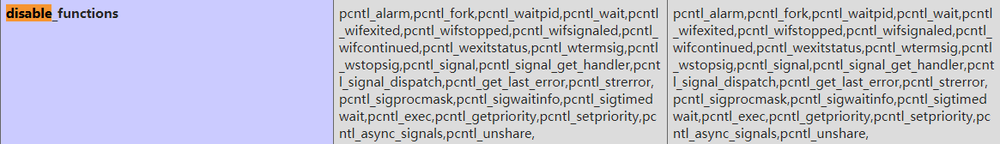
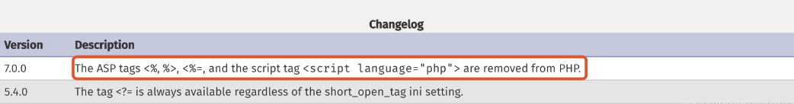

phpinfo信息利用
phpinfo信息利用
基础信息
system:系统信息

extension_dir:php扩展的路径
$_SERVER[‘HTTP_HOST’]:网站真实IP

有关目录的
$_SERVER[‘DOCUMENT_ROOT’]:web根目录
**$_SERVER[‘SCRIPT_FILENAME’]**index.php根目录
**$_SERVER[‘CONTEXT_DOCUMENT_ROOT’]**前运行脚本所在的文档根目录
session.save_path session的存储路径
APACHE_RUN_DIR 和 APACHE_PID_FILE APACHE的路径

pdo_mysql.default_socket

临时文件目录
phpinfo()页面post一个shell，可以在_FILES[“file1”]中看到上传的临时文件，如果有个lfi，便可以直接getshell了
重要配置
allow_url_include:远程文件包含
disable_functions:表示禁用的函数

有时候我们上传了一个webshell却不能用，有很大可能是管理员做了配置，禁用了php执行系统命令的函数。
asp_tags:php标签(php7以下版本有)
有4种形式如果这个选项不开启的话(一般默认不开启)，使用asp的标签是不会解析的

short_open_tag
允许这种形式，并且<?=等价于<? echo
magic_quotes_gpc:

它是用来实现addslshes()和stripslashes()这两个功能的，对SQL注入进行防御
php5.4以下版本有的函数，默认开启，会对特殊字符进行转yi
参考
All articles in this blog are licensed under CC BY-NC-SA 4.0 unless stating additionally.
 wechat
wechat alipay
alipay